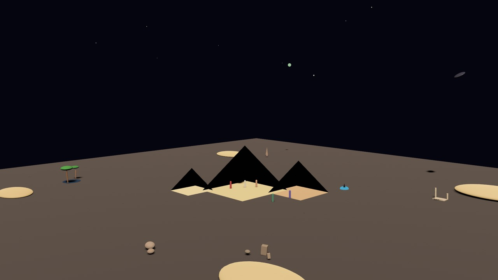

Whole places
Terrain, water, paths, and foliage. PBR materials and real lights. A spawn point for visitors, and guided tours through what you built.
Worlds from words
LocalGPT Gen turns what you type into an explorable 3D world, with geometry, materials, lighting, behaviors, and sound. Build alone, or host a session and build with friends on your network.
cargo install localgpt-gen
Open source under Apache-2.0. Built with Bevy. Runs on your machine.

Gen's AI builds with more than 40 tools for geometry, lighting, sound, and physics. It takes screenshots of its own work and keeps adjusting, and you can keep asking for changes.
Terrain, water, paths, and foliage. PBR materials and real lights. A spawn point for visitors, and guided tours through what you built.
Orbit, spin, bob, look-at, pulse, path-follow, and bounce. Stack several on one object. No scripting.
Wind, rain, forest, ocean, cave, and stream ambience, synthesized live. Name something a campfire or a waterfall and you'll hear it, louder as you walk closer.
Rigid bodies, colliders, joints, and gravity, so things can fall, roll, and collide instead of just standing there.
For bigger worlds, Gen blocks out regions, paths, and terrain first, then places landmarks before details, each one snapped to the ground.
Save a world and load it back later. Export to glTF for Blender, Unity, or Unreal, or to one HTML file that plays in any browser with its motion and sound.
Host a session and friends on the same network join from their own machines. Everyone walks the same world in their own window, and anyone can ask your AI to build where they're looking.
# your machine
$ localgpt-gen --host
Session PIN: 482 913
# a friend's machine, same network
$ localgpt-gen --join
Session PIN (shown on the host's console): 482913
# then, in the friend's terminal
You: put a lighthouse on that hillGen works with the model you already use. World quality depends on the model's spatial reasoning, so stronger models build better worlds.
Let Claude CLI, Gemini CLI, or Codex drive. No API key: Gen relays their tool calls to your window. Claude CLI is the default.
localgpt-genUse a key for Anthropic, OpenAI, Gemini, xAI, and others, or a local model through Ollama.
# ~/.config/localgpt/config.toml
[agent]
default_model = "ollama/llama3"Run Gen as an MCP server and build from Claude Desktop, Codex Desktop, VS Code, Zed, or Cursor.
localgpt-gen mcp-serverGen installs with Cargo, Rust's package manager, as a single binary.
cargo install localgpt-genWith the Claude CLI installed and signed in, there's nothing to set up. Otherwise, add an API key or an Ollama model to ~/.config/localgpt/config.toml.
localgpt-gen "build a castle on a hill"Watch it build, walk around, and keep typing to change it.
Gen opens a 3D window, so it needs a GPU-capable display. It runs on macOS, Linux, and Windows.
Open source apps that turn what you type, write, and listen to into places you can explore, all running locally.